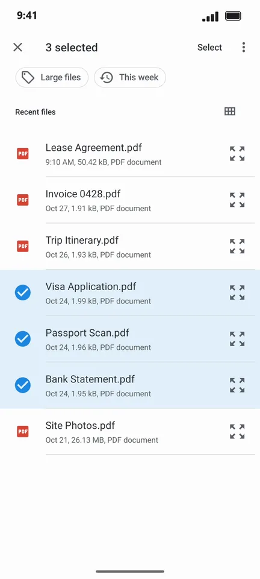
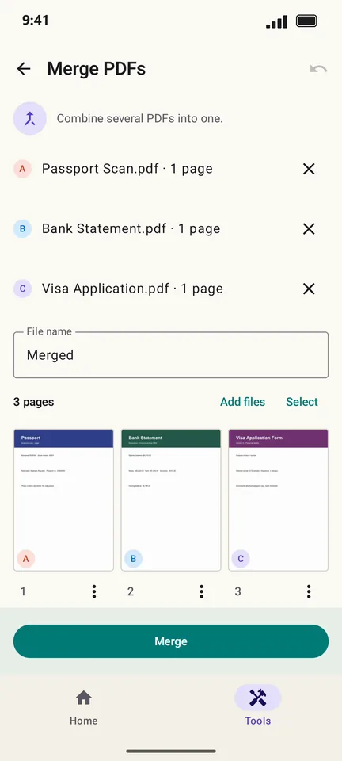

How to merge PDF files on Android
Visa applications, job portals and landlords often want one PDF, not five. PageCat joins any number of PDFs into a single file on your phone, in the order you choose, without a watermark.
Steps
On the Home screen, tap Merge.

Long-press the first PDF, then tap the others you want to join.

Tap Select. You now see every page of every file: drag to reorder or remove pages you do not need.

Tap Merge. The preview shows the combined PDF and its size.

Tap Save to… to keep it, or Share to send it.
Good to know
- Add more files later with Add files on the merge screen.
- Password-protected PDFs can be merged once you enter their password. Use Protect on the result if it should stay locked.
Questions
How many PDFs can I merge?
There is no fixed limit. Very large files take a little longer because everything happens on your phone.
Does PageCat add a watermark?
No. The merged PDF contains only your pages.